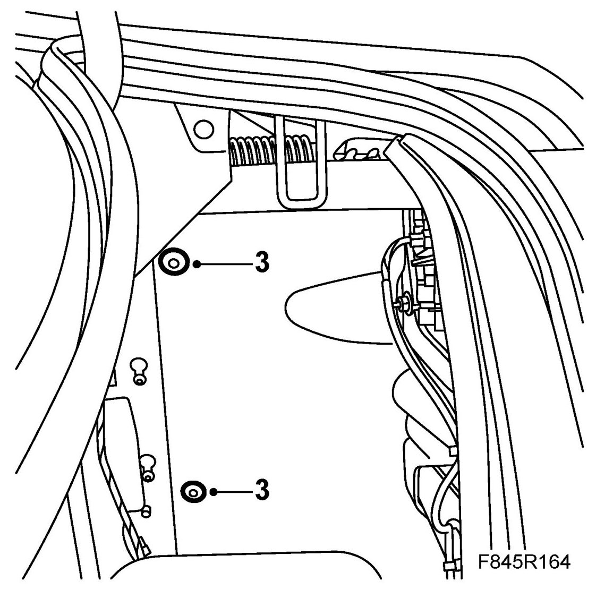
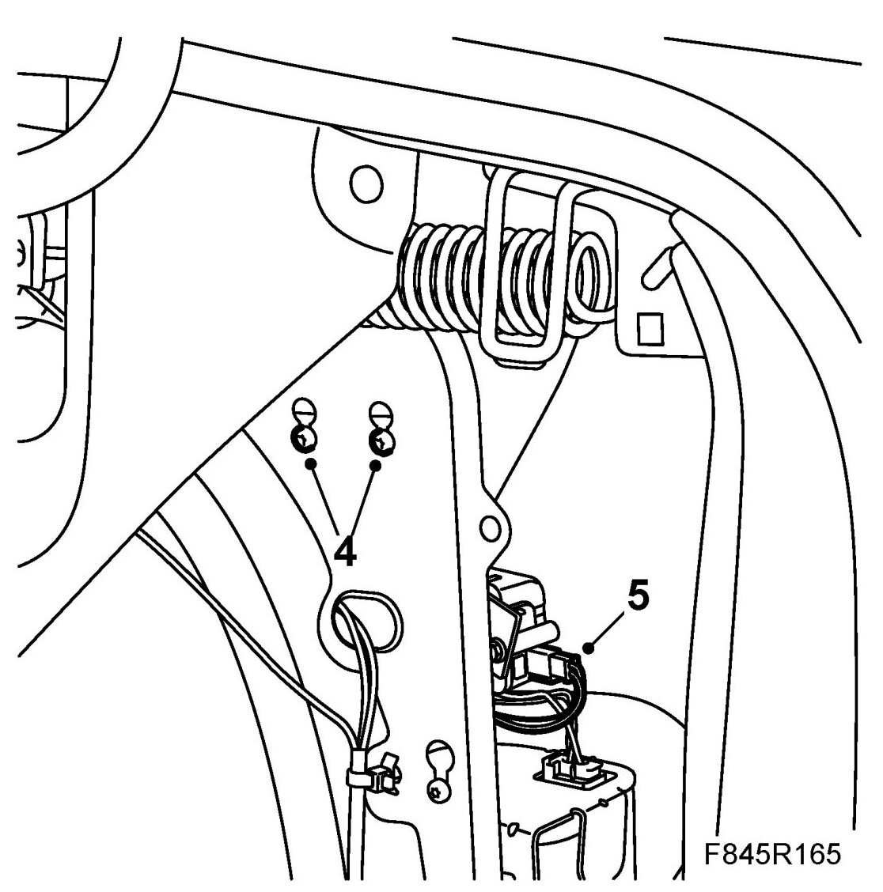
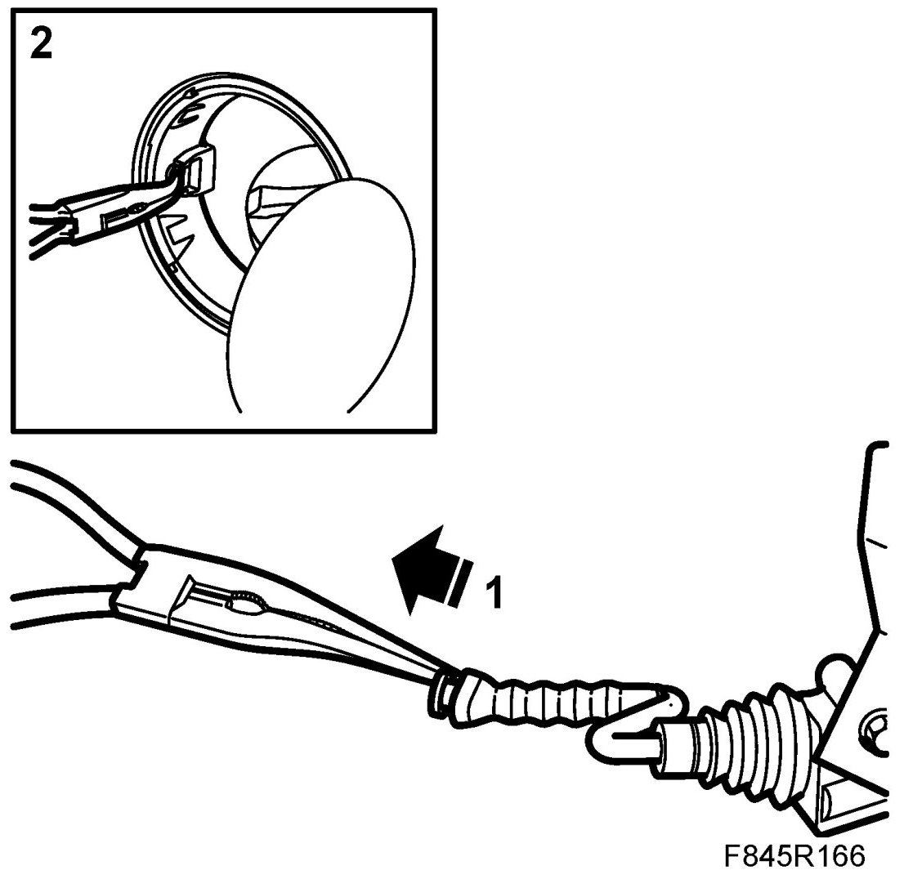
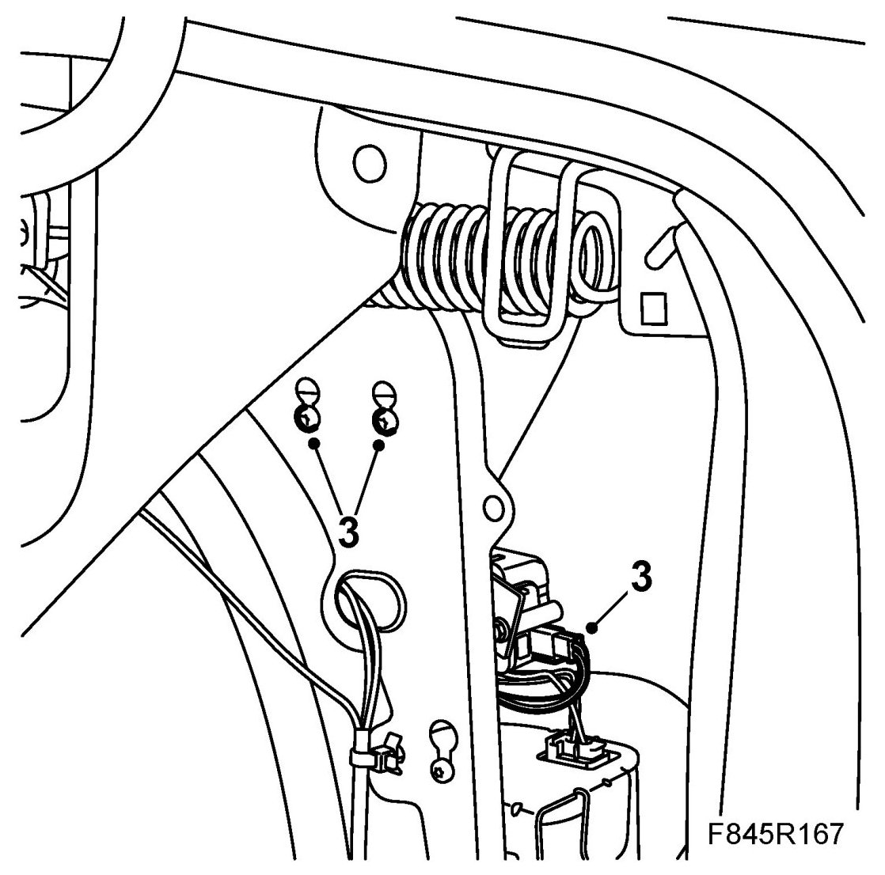
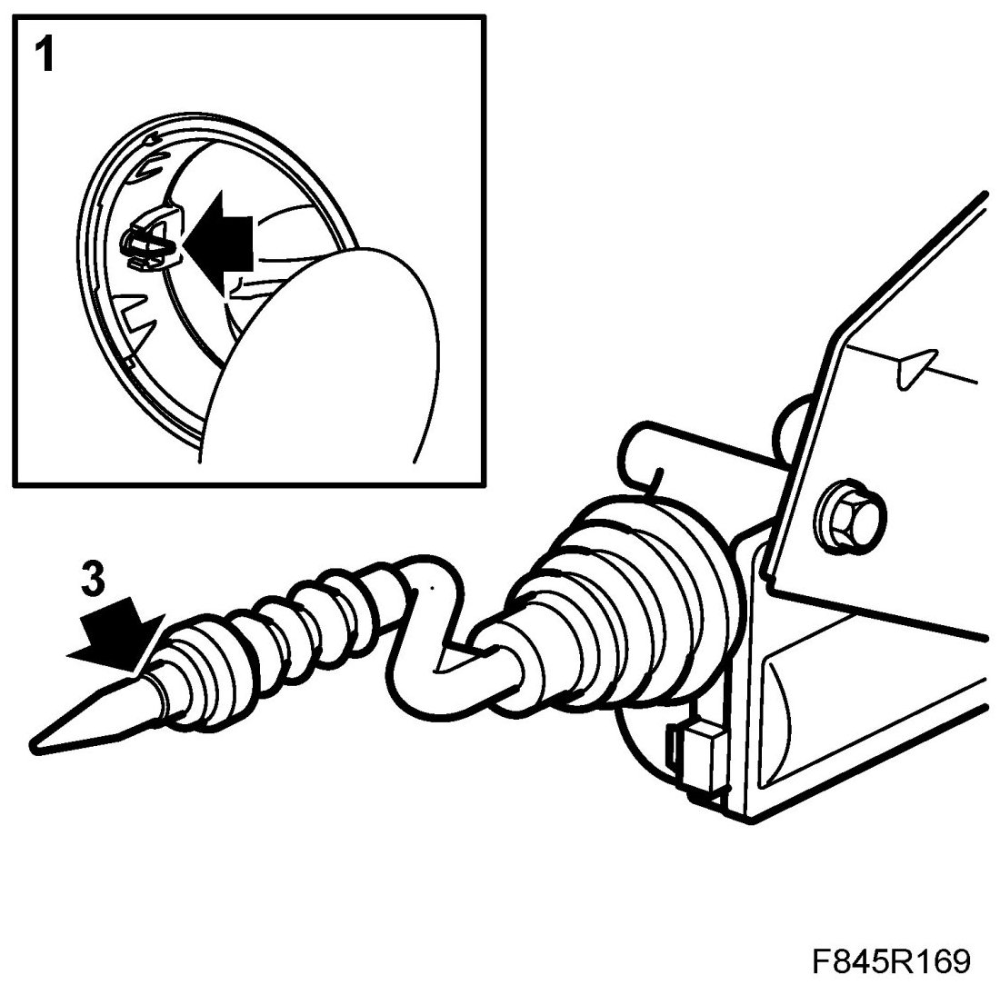
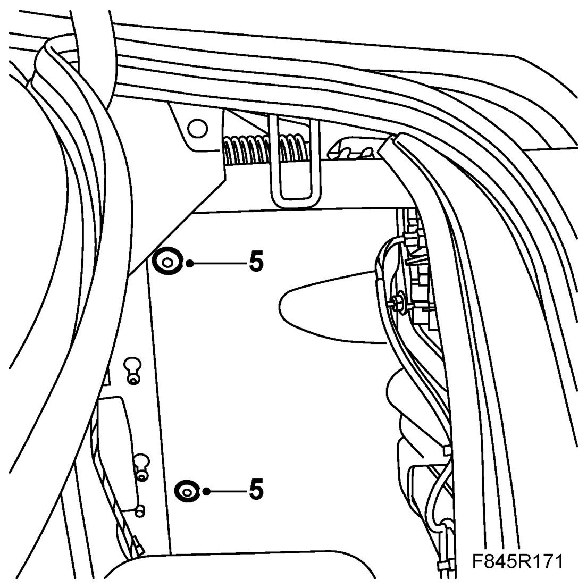

Solenoid, Fuel Filler Flap, 4D (434 a)
Solenoid, Fuel Filler Flap, 4D (434 a)
Removing
1. Open the bootlid.
2. Open the side hatch
3. Remove the insulation material

4. Loosen the solenoid retaining bolts and lift up the solenoid. Pull the rubber gaiter from the filler flap sleeve.

5. Part the connector.
Fitting the solenoid with old gaiter
1. Pull the solenoid slightly out of the gaiter.

2. From outside, insert needle-nosed pliers through the filler flap sleeve. Grip the solenoid's front gaiter and pull it out through the hole.
3. Place the solenoid in the mounting and tighten it. Connect the connector.

4. Check the filler flap's locking function.
5. Fit the insulation matting and shut the side hatch. Close the bonnet lid.
Fitting a solenoid with new gaiter
1. Pull the gaiter through the filler flap sleeve's hole using a pair of pliers.

2. Place the solenoid in the mounting and tighten it. Connect the connector.
3. Cut off the end of the gaiter according to the markings.
4. Check the filler flap's locking function.
5. Fit the insulation matting and shut the side hatch. Close the bonnet lid.
